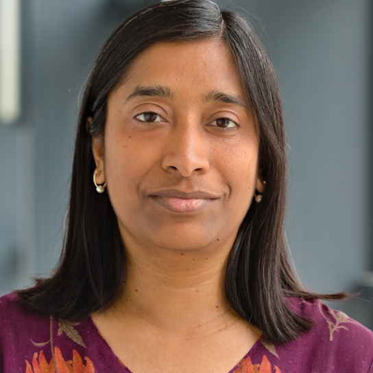

Advanced general relativity and gravitational waves
Master's course
Cardiff University, UK
Research Associate
Max Planck Institute for Gravitational Physics (AEI), Hannover
I am a research associate at AEI Hannover, working on gravitational-wave astrophysics, numerical relativity, and multi-messenger observations of compact binaries.
Upcoming
In the news
CV
Research associate at the Max Planck Institute for Gravitational Physics (AEI) with a background in numerical relativity, gravitational-wave modeling, and data-driven astrophysics.
Download CVResearch Associate, AEI Hannover
Research
My work uses Einstein’s theory of gravity, numerical simulations, and data analysis to study compact objects and the gravitational waves they emit. I am especially interested in how gravitational waves offer a new way to probe dark matter and explore parts of the universe that cannot be seen with light alone.
Mentoring
Master's course
Cardiff University, UKPhysics for Science and Engineering I (Mechanics) and II (Electricity and Magnetism)
University of Mississippi, USPhysics for Science and Engineering I (Mechanics)
University of Mississippi, USOutreach
Work in progress. New outreach details will be added here soon.
Contact
Max Planck Institute for Gravitational Physics (AEI), Hannover
Callinstr. 38, 30167 Hannover, Germany